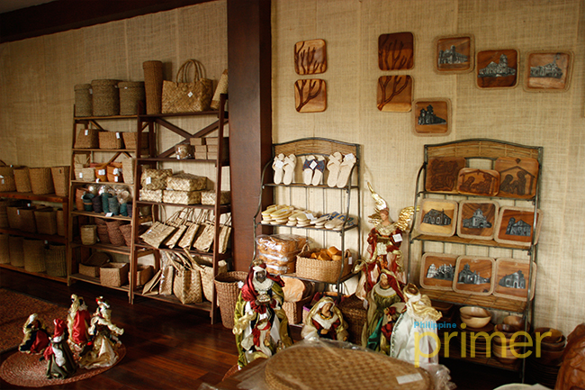

Experience the traditions, festivals, local crafts, and way of life that make Albay rich in culture.
Cultural tourism in Albay helps visitors understand the identity and traditions of the province. Through festivals, food, art, music, and local practices, travelers can experience the unique culture that continues to make Albay special.

The Ibalong Festival is one of the most famous cultural celebrations in Albay, showing stories, costumes, dances, and local pride.

Museums and galleries in Albay display local history, art, and heritage that help visitors appreciate the culture of the province.

Cultural tourism also includes tasting local food and delicacies that reflect the traditions and flavors of Albay.

Local products, handicrafts, and community traditions show the creativity and values of the people of Albay.
Visitors can watch festivals, taste local dishes, explore museums, and learn about the traditions of Albay. You can also enjoy cultural performances, buy local products, and take photos of colorful events and displays. Cultural tourism helps visitors understand the daily life, creativity, and beliefs of the people. It is a meaningful way to connect with the identity of the province.
Respect local customs, traditions, and community practices during your visit. Wear comfortable clothing, bring water, and keep your belongings safe during festivals or crowded events. It is also good to support local businesses by buying local food or handmade products. Always be respectful when taking pictures of people or cultural events.